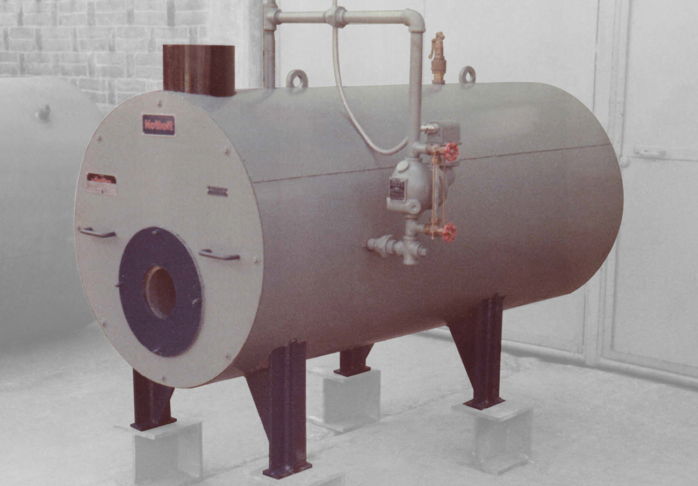
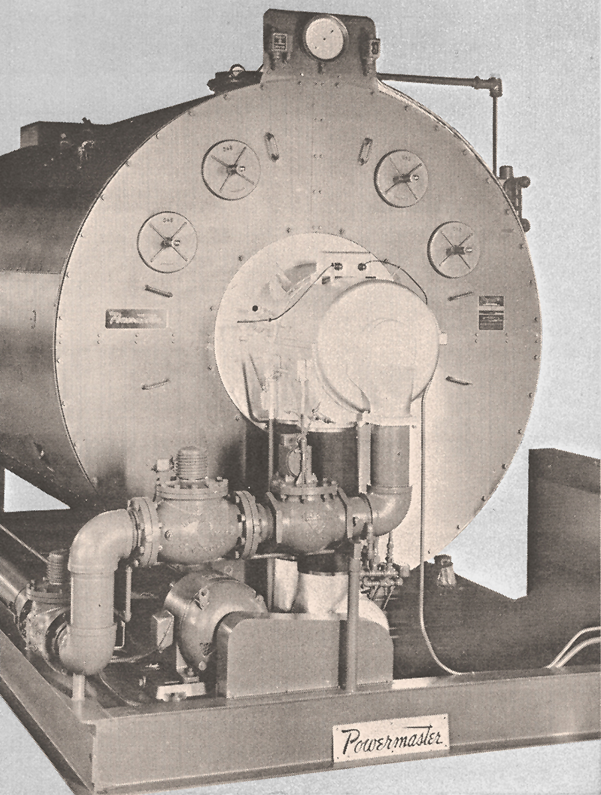
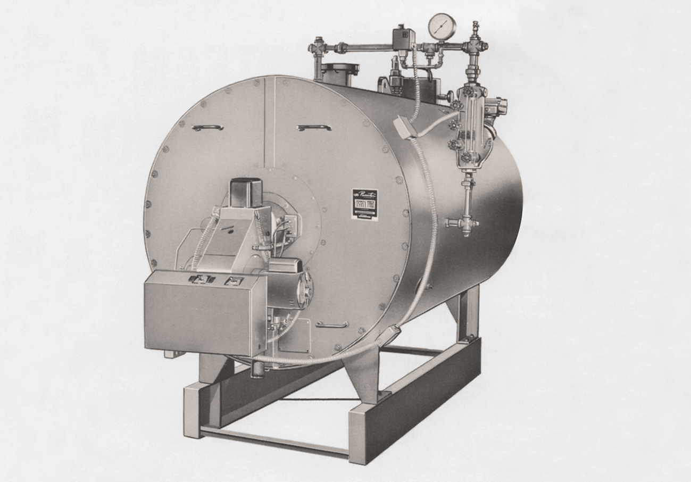
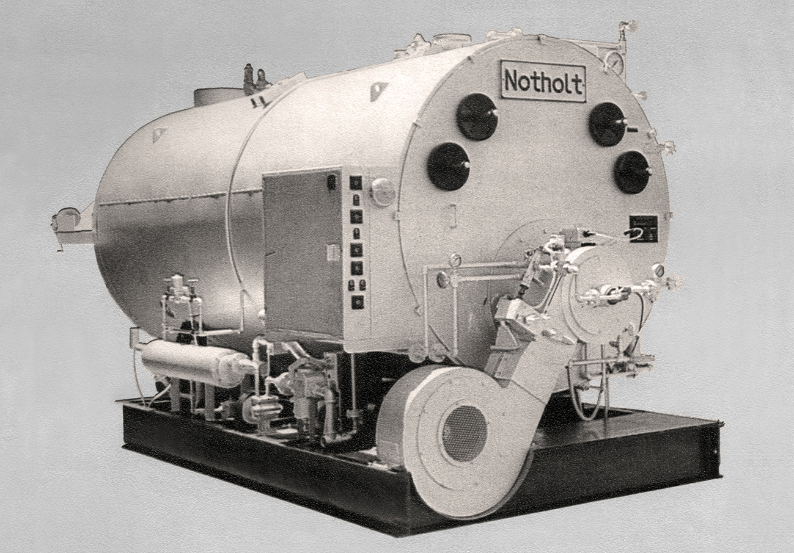
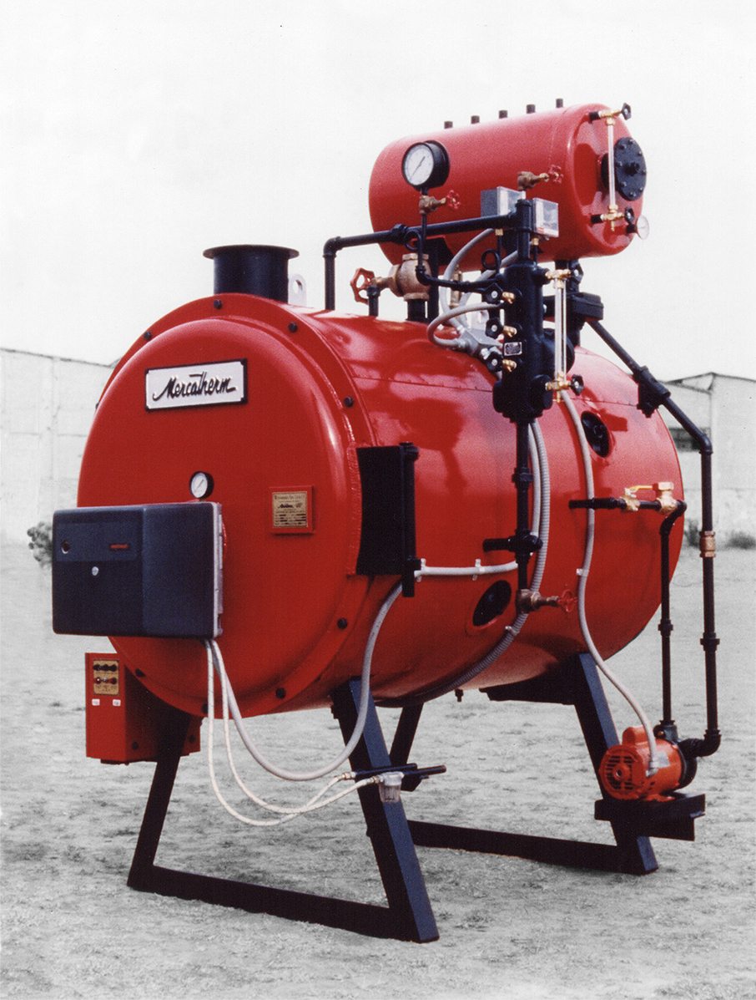
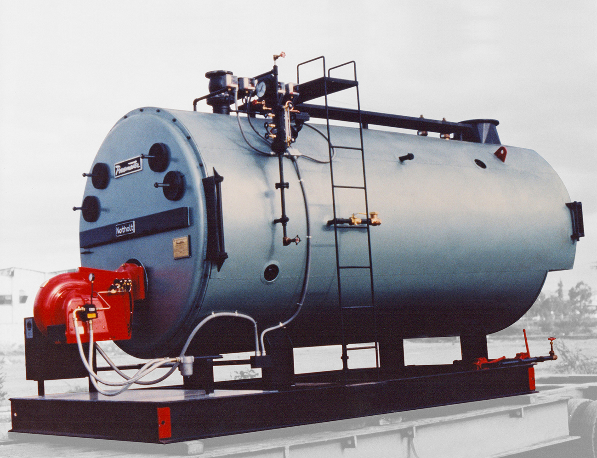
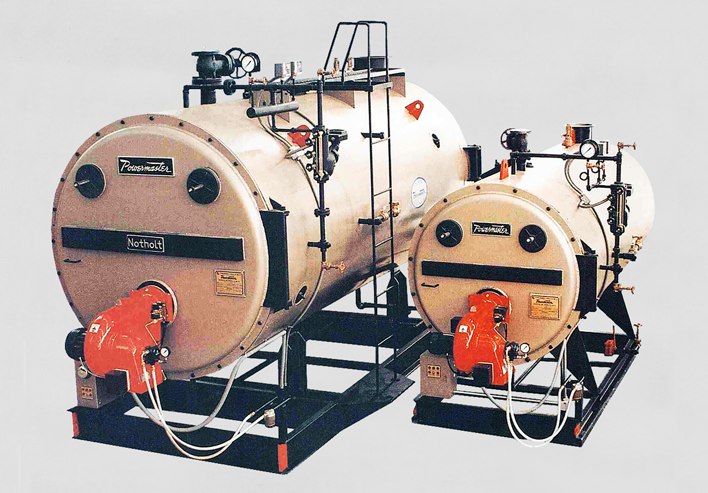
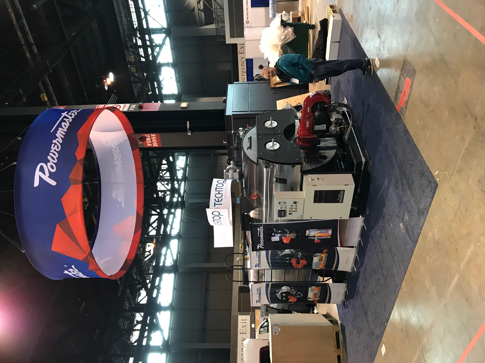
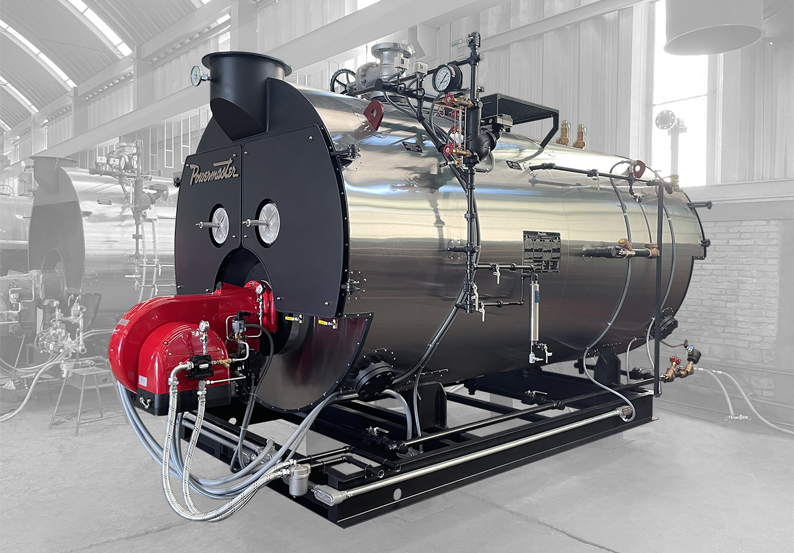

Historia
Fundado en 1949, Calderas Powermaster inicia operaciones como representante exclusivo para México, de la caldera Powermaster de la firma Norteamericana “Orr & Sembower”.
1949
A partir de 1954, se inicia la fabricación de la caldera Powermaster en México bajo licencia de “Orr & Sembower”.
1954
En 1975, el Grupo Calderas Powermaster adquiere los derechos de la marca y tecnología “Powermaster” para la República Mexicana en exclusiva.
1975
En 1984 se reestructura el Grupo Calderas Powermaster, iniciando con ello la implementación de tecnología europea al diseño original. Obteniendo como resultado una nueva caldera más segura, eficiente, confiable y con menores requerimientos de mantenimiento.
1984
En 1988 se rediseñan los hogares de nuestras calderas para cumplir con la norma ISO/DIN 5730 de la Organización Internacional de Normalización. Obteniendo como resultado una mayor vida útil de la caldera al reducir considerablemente los coeficientes de fatiga por calor en el hogar y una combustión más limpia gracias a que se mejoran considerablemente los coeficientes de liberación de flama.
1988
En 1989 se sustituye el marco refractario por una cámara de retorno de gases totalmente enfriada por agua "Wet-Back" en calderas de 80 HP en adelante. Elevando el aprovechamiento de calor de la caldera y eliminando el lado débil de la caldera de tubos de humo. Permitiendo el diseño y la fabricación de calderas de mayor capacidad.
1989
En 1993 se termina la construcción de nuestra nueva planta en San Juan del Río, Qro. Una planta moderna con un área de fabricación de 4300 metros cuadrados sobre una superficie total de 6500 metros cuadrados para crecimientos futuros. Grúas viajeras, horno de relevado de esfuerzos y máquinaria para fabricación de gran capacidad nos permiten aumentar nuestra producción y presencia en el mercado.
1993
En 1994 nuestra planta obtiene la autorización del National Board para estampar los sellos S, H y U de la American Society of Mechanical Enigineers (ASME) para calderas y recipientes sujetos a presión.

1994
En 2000 se termina la ampliación de 950 metros cuadrados de la planta para obtener un total de 5,250 metros cuadrados para hacer frente al crecimiento de la empresa.

2000
En 2011 el Grupo Calderas Powermaster adquiere la marca “Powermaster” en los Estados Unidos de Norteamérica e inicia la comercialización de las calderas en U.S.A.
2011
En 2014 Calderera del Centro SA de CV obtiene la certificación ISO9001 para su sistema de gestión de calidad

2014
Se termina la ampliación con una nave nueva. Con esta ampliación se pretende satisfacer la creciente demanda de los mercados de exportación.

2018
EN 2020 se Instalan paneles solares para abastecer el consumo eléctrico de la fábrica. 2021 se ampliaron los paneles solares.

2020
Actualmente Calderas Powermaster se consolida como el líder en la fabricación de calderas de tubos de humo a nivel internacional. Más de 6,000 calderas vendidas en toda la República Mexicana, Centroamérica, Sudamérica y U.S.A. operando a satisfacción de nuestros prestigiados clientes respaldan nuestra marca.

Actualmente
Fabricamos las calderas más seguras, de mayor eficiencia, de mayor confiabilidad en su operación y de mayor vida útil del mercado, utilizando únicamente tecnología de punta a nivel mundial, con los mejores materiales que existen en el mercado internacional.
Justificar la Confianza Depositada es nuestro lema de ventas, con el respaldo del excelente prestigio de nuestra marca.